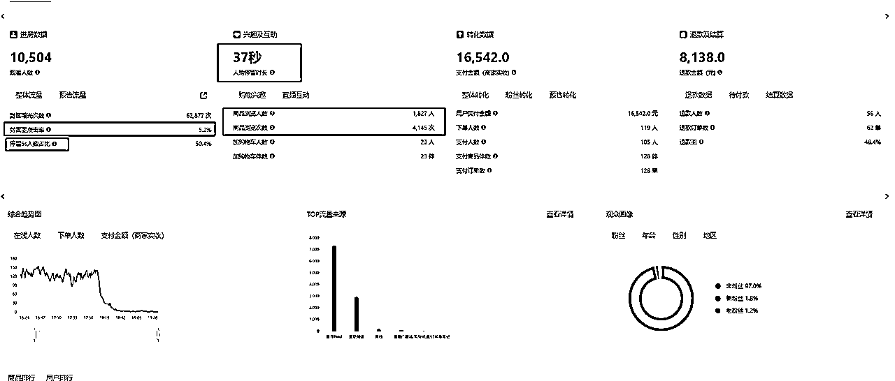

来源：https://dkl7w7ir14.feishu.cn/docx/HEtJdnpXho3qOoxkrJjcn5lVnWg
只聊项目本身，怎么做？哪些坑要踩！至于最基本的注册账号流程这些我相信想做好的人自己会去搜索。看之前想说一句话，任何项目如果抱着浅尝辄止的心都注定失败。后面内容围绕这几个板块
1.数据展示 2 . 选品 3.起号 4. 工具介绍 5.怎么放大 6.一些经验和坑
如果你对数据非常敏感，那么以下的几张数据截图你可以看到很多有效信息，直播时长，什么时候起的量，退货率，封面点击率，人均停留时长，停留5S占比，流量来源，进房人数和转化比。这些非常重要，下面我们慢慢拆。
大家一定要记住一个观点小红书没有什么技术，别人做的牛逼单纯就是因为把时间花在正确的地方上面，花在了找品，测品，找封面，测封面，研究同行，不断总结，继续迭代上。接下来我们拆开说选品和选封面以及选直播间还有大家最关心的起号。
我们是卖货的，我们不是IP，那我们卖的是什么？是货本身
想一下小红书直播用户购买路径是是什么！
我们通过这个流程能清晰一点品直接影响用户的购买决策，主播说的再天花乱坠，这个品得能打动用户才行。
接下来说选品的几个渠道
刷，做无人直播就硬刷电商类的直播，找到那些无人直播的账号，截屏下来。有几个维度
1：场观5000以上
2：最好是新号粉丝量越低越好
3：看销量，24小时加购越多越好，单量百单以上
4：看主页获赞与收藏，主页无笔记出单的基本是无人直播
符合以上标准的，截图记录他的账号，把品记录下来，小红书按照综合排序或销量去搜索观察这个品去看竞争度大不大
按照销量或综合排序，看销量在100单以上的有多少，（24小时内刚爆的品没有销量显示的，蹲直播间观察）
注：单量在100单以上的账号越低1-3个，销售量又是在近期1-3天的，这种品竞争度一定是不高的
品筛选好了，对标选手也知道了。接下来就是观察对标选手的开播时间，封面，以及她用的是哪个主播
点击直播动态
从开播动态中我们知道了他的开播标题，接下来打开灰豚数据搜索他的标题，点击直播分析，直播搜索即可（筛品的时候可以把粉丝数过滤一下）
想用他的封面提供两种方法
1：（鼠标右击另存就行，画质不高的用美图秀秀中的画质修复也可以）
2： 抖音或者小红书拍照识图

总结：小红书站内选品就是通过刷低粉爆款，快速去跟款，在别人没有大爆之前提前更上
有个坑说一下，如果你们筛完品要打这个低粉爆款一定要错开时间去打，同一时间开播平台一定会把流量灌给利用率高的。
这种适合女孩子，我确实看过有的女生就是通过女性的视角和感觉去选品爆发的，不适用男生，说下她怎么操作的，她会搜索自己感兴趣的产品，在抖音上面看主播直播，一个直播间停留个10分钟左右，如果主播的话术和表现力能让她有下单的欲望，她会留下这个主播备用，一轮筛选下来，留出她最感兴趣的主播去播这个品
2：粉丝量低，观看人数低，自然流高，但是销售额高的尤其关注（这说明转化比高）
3：初筛后，我们点进账号，看她的销售额，人群画像，自然流
4：自然流占比高，单场直播能卖10万加，人群画像符合小红书我们就用（注意结合小红书搜索看有无人用）
封面是起号的关键，一个好的封面，可以有效提高用户的点击率，这个标准我们最好控制4%以上越高越好
当我们选好品后，我们可以搜索和这个品相关的笔记，把品拆分我们能想到的关键词，再用这些关键词去搜索笔记，那么一个好的笔记封面有什么标准呢？就一点
结合上面说到的小红书站内选品之找封面，我们通过灰豚数据把所有我们要打的品的爆款对标封面全扒下来，全部放到桌面，去看相同点
按照我们上面说的数据化选品之考古家选品就行（往上翻）选直播间就那么几个点。
品>封面>直播间
品是测出来的，封面也是测出来的，好的直播间也是测试出来的，我们一定要去测

3场直播足矣测出一个品能不能播起来，第一场直播播够3小时，拿到激励流量，第二天开播一定要去拉时长【在账号没有播起来之前都要去拉时长，20个小时起】，下播后复盘复盘的点在下面，第三场直播同样拉时长
封面不行换封面，素材不行换素材，三场直播品不行就换品 注：每次复盘改动1个点即可，控制变量
你需要录播工具（江湖工具箱就行）http://www.jianghudata.com/
OBS https://www.onlinedown.net/soft/637537.htm
小红书直播助手 https://www.xiaohongshu.com/zhibo/robs 和灰豚数据，以及考古加，工具的基本操作，如何录，如何设置分辨率生财里面很多，搜索即可，我会着重说灰豚和考古家我们主要看哪些点。
直播搜索可以用来查看对标直播间（搜索对标直播标题）
商品搜索，看这个品卖的好的直播间有哪些（点关联直播显示的是直播间卖的品，点击查看可以看到对标直播间包括封面等）
看主播直播记录，记录开播时间方便录屏
点进几场直播记录看直播人群和年纪
一个账号只要起来，立马复制，直播间素材都不用更换，A账号早上直播 B账号就晚上开播（封面有流量就沿用无流量就换，素材不用更换）
重要
最后，小红书无人直播真的没啥技术，这就是个信息差项目，我们就是再给平台做数据，平台在这个阶段需要我们做数据做案例而已，拼到最后比的就是谁在选品上花的时间和心思更多，测试的封面更多，筛选的直播间更多，至于封号多备几个号就行，封号快是项目本身决定的（就是和平台对抗）你与其去钻研怎么防止封号，不如多备点号